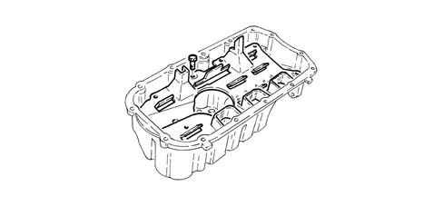
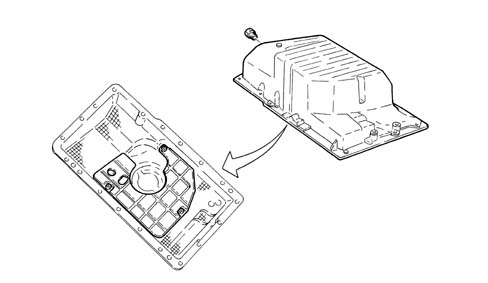
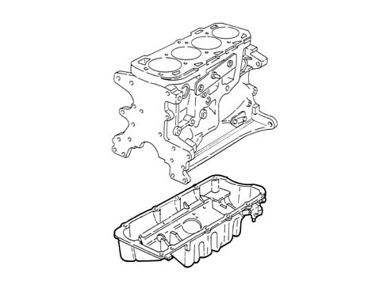

1020A CRANK CASE OIL SUMP
- Path
- Descriptions > 10 ENGINE UNIT > 1020 CRANKCASE SUMP AND COVERS > 1020A CRANK CASE OIL SUMP
- Kind
- system description
- Applies to
- engines: 2.0 JTS, 3.2 V6, 1.9 JTD 16V; all production periods
- Interactive page
- https://sloeber94.github.io/elrnDB-aGt/en/#/125000255
Applies to: engines: 2.0 JTS; all production periods
CONSTRUCTION FEATURES
Made out of aluminium alloy, this is a structural part of the engine which, in addition to containing the engine oil, has mechanical functions as it is directly connected to the intermediate shaft support.
Baffles are fitted inside the sump.
When the oil sump is secured to the crankcase, sealant is interposed.

Applies to: engines: 3.2 V6; all production periods
CONSTRUCTION FEATURES
In aluminium alloy with baffles inside.
It is fastened to the crankcase with special sealant in between.

Applies to: engines: 1.9 JTD 16V; all production periods
CONSTRUCTION FEATURES
This is a structural part of the engine which, in addition to containing the engine oil, has mechanical functions as it is directly connected to the intermediate shaft support.
The aluminium alloy oil sump contains special partitions which prevent the engine oil from moving around too vigorously and possibly draining the pump.
There is a reinforcement plate in the lower part of the sump by the groove for housing the front section of the exhaust pipe designed to restrain the exhaust pipe in the case of sudden impacts.
